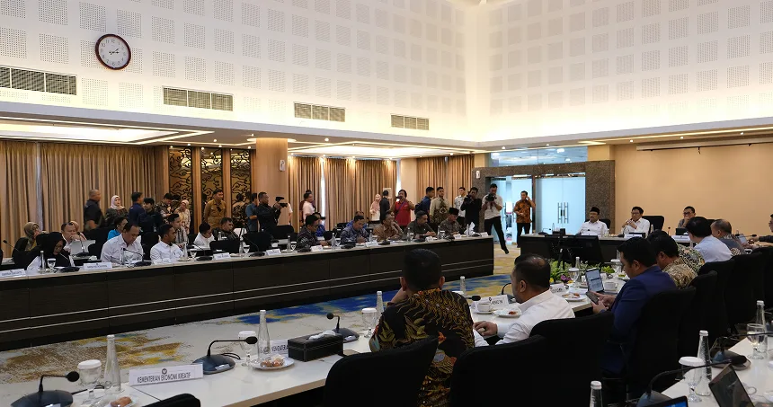

BERGERAK
BERGERAK
BERDAYA
Kementerian Koordinator Bidang Pemberdayaan Masyarakat Republik Indonesia adalah kementerian dalam Pemerintah Indonesia yang bertugas menyelenggarakan sinkronisasi, koordinasi, serta pengendalian pelaksanaan kebijakan di bidang pemberdayaan masyarakat. Dipimpin oleh seorang Menteri Koordinator, kementerian ini bertanggung jawab atas penyiapan, penyusunan, dan implementasi kebijakan terkait pemberdayaan masyarakat.
